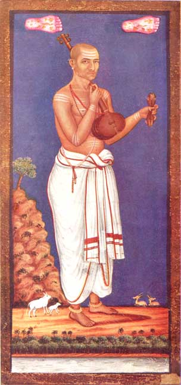

Tyagaraja
(A NOTE ON THE FRONTISPIECE)
BY C. JINARAJADASA, M.A., (Cantab)

TYAGARAJA
(Believed to be a Contemporary Portrait)
In February 1916, there took place at Gokhale Hall, Madras, the first exhibition of paintings of purely Indian artists. The exhibition was due to the enthusiasm of Dr. J. H. Cousins and other Theosophists at the Theosophical Headquarters, Adyar. At that exhibition, my eye picked out this picture at once, and I began to sing its praises. The owner of the picture, my friend, the late Mr. T. N. Krishnaswami Pillai of the School of Arts, on noting my enthusiasm, promptly presented it to me. He had marked it for sale, and the price was Fifteen Rupees! He told me the picture was of the Tanjore School, but he gave it no name. That name was suggested later, though tentatively.
I noticed the little picture because it transported me to Italy–to Giotto, Fra Angelico, Luini and other artists whom I love, of that school called the ‘Primitives.’ They are called that, not because they are ‘primitive,’ i. e., simple and incapable, but because they are the beginners of the schools of Italian painting.
Wherever there are these ‘Primitives’–in Greece, or Italy, or India–they have one characteristic. There is more ‘life’ in their art than ‘form,’ more soul than substance in their composition. They have still many deficiencies in technique; others who follow them are more able in the handling of their material. But they see ‘life’ as through a mist of tenderness and devotion, and see all objects far more as symbols than as ‘facts.’ They are great dreamers, and–as in this picture–a tiny drawing of a deer, a few wavy lines for a river, are as sufficient as a full-sized animal or a true picture of a river.
In this picture, the marvel to me is the exquisite portrait. It is as great a portrait as that by any Western artist. All the soul of the musician is there, and yet probably it is accurate in line and colour. What Western artist would think of painting a three days’ beard’s growth? Yet the Indian artist, being ‘true to life’ brings the musician to nearer to us thereby.
The picture is not a water-colour. It is more like a fresco or tempera painting. The artist has first laid on some material as a backing and then painted on it. It is a gem, and I am glad to own one great thing of India.
BACK